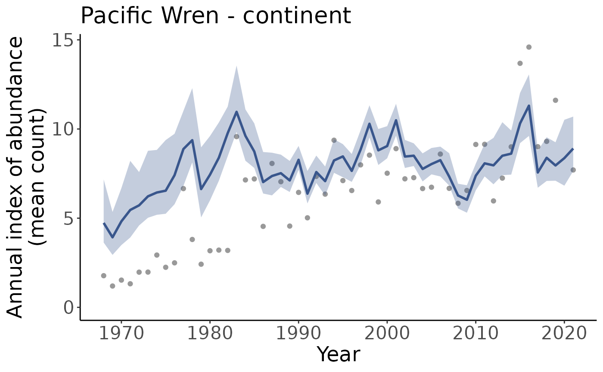
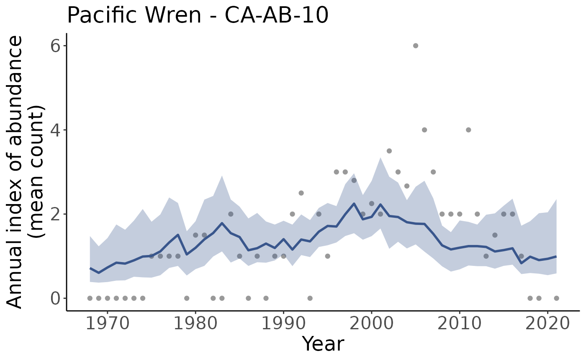
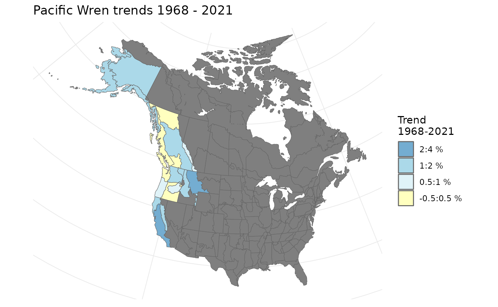

Welcome! Let’s get you started with bbsBayes2.
First we’ll make sure we have the right software installed, we’ll fetch the breeding bird data, and then we’ll run through some example workflows.
Install cmdstanr
Because bbsBayes2 uses Stan to run the Bayesian models, we need to make sure we have cmdstanr and cmdstan both installed.
It is recommended to run this is a fresh R session or restart your current session
install.packages("cmdstanr", repos = c("https://mc-stan.org/r-packages/",
getOption("repos")))Now we should be able to use cmdstanr to install cmdstan
cmdstanr::install_cmdstan()Let’s check that everything went as planned
cmdstanr::cmdstan_path()
#> [1] "/home/runner/.cmdstan/cmdstan-2.31.0"
cmdstanr::cmdstan_version()
#> [1] "2.31.0"Problems? Check out cmdstanr’s vignette on Getting Started
Download BBS data
Now we’ll fetch the BBS data using functions included in bbsBayes2.
Note that most bbsBayes2 functionality can be explored without downloading BBS data by using the included sample data. Specify
sample_data = TRUEin the firststratify()step (see the next section).
First we’ll load the package.
There are four types of BBS data that can be downloaded:
- Two levels
stateandstop(onlystateworks with bbsBayes2 models) - Two releases
2020and2022
Unless you have a specific reason to need a different version, the
default (level state and release 2022) is
likely the one you want. However you can download all data sets and
specify which one you wish to use in the stratify()
step.
fetch_bbs_data() # Default
fetch_bbs_data(release = "2020") # Specify a different releaseWorkflow
Now that you have cmdstanr installed and the BBS data downloaded, we’ll walk through a general workflow for modelling species trends with bbsBayes2.
Stratify the data
The first step in any bbsBayes2 analysis is to stratify the data. In this step we choose a stratification type as well as a species to explore.
s <- stratify(by = "bbs_usgs", species = "Snowy Owl")
#> Using 'bbs_usgs' (standard) stratification
#> Loading BBS data...
#> Filtering to species Snowy Owl (3760)
#> Stratifying data...
#> Renaming routes...We can also play around with the included sample data (Pacific Wrens)
s <- stratify(by = "bbs_cws", sample_data = TRUE) # Only Pacific Wren
#> Using 'bbs_cws' (standard) stratification
#> Using sample BBS data...
#> Using species Pacific Wren (sample data)
#> Stratifying data...
#> Combining BCR 7 and NS and PEI...
#> Renaming routes...Stratifications included in bbsBayes2 are bbs_usgs, bbs_cws, bcr, latlong, prov_state. See the articles on stratifications and custom stratifications for more details and examples.
Available species can be explore using the
search_species() function.
Prepare the data
Once we have stratified the data, we can now prepare it for use in a
model. In this step data will be filtered to omit routes with too few
samples, etc. See prepare_data() for more details on how
you can customize this step.
p <- prepare_data(s)Prepare the model
Next we will prepare the model parameters and initialization values.
See prepare_model() for more details on how you can
customize this step.
md <- prepare_model(p, model = "first_diff")Run model
Now we can run the model.
The default iter_sampling and iter_warmup
are 1000 and the default chains is 3. In the interest of
speed for this example, we are using much lower values, but note that
this almost certainly will result in problems with our model.
m <- run_model(md, iter_sampling = 20, iter_warmup = 20, chains = 2)Explore the model outputs
First we will generate indices according to different regional
categories. By default these are continent and
stratum.
i <- generate_indices(model_output = m)
#> Processing region stratum
#> Processing region continentWe can visually explore these indices by accessing the
indices item in the list
i[["indices"]]
#> # A tibble: 1,080 × 17
#> year region region…¹ strat…² strat…³ index index…⁴ index…⁵ index…⁶ index…⁷
#> <dbl> <chr> <chr> <chr> <chr> <dbl> <dbl> <dbl> <dbl> <dbl>
#> 1 1968 CA-AB-10 stratum CA-AB-… "" 0.717 0.388 0.389 0.545 0.842
#> 2 1969 CA-AB-10 stratum CA-AB-… "" 0.605 0.371 0.380 0.433 0.696
#> 3 1970 CA-AB-10 stratum CA-AB-… "" 0.732 0.386 0.435 0.586 0.893
#> 4 1971 CA-AB-10 stratum CA-AB-… "" 0.845 0.420 0.448 0.674 0.950
#> 5 1972 CA-AB-10 stratum CA-AB-… "" 0.824 0.426 0.429 0.666 1.09
#> 6 1973 CA-AB-10 stratum CA-AB-… "" 0.901 0.511 0.522 0.731 1.16
#> 7 1974 CA-AB-10 stratum CA-AB-… "" 0.991 0.496 0.564 0.795 1.16
#> 8 1975 CA-AB-10 stratum CA-AB-… "" 1.00 0.490 0.520 0.770 1.18
#> 9 1976 CA-AB-10 stratum CA-AB-… "" 1.11 0.547 0.620 0.921 1.39
#> 10 1977 CA-AB-10 stratum CA-AB-… "" 1.32 0.720 0.777 1.13 1.58
#> # … with 1,070 more rows, 7 more variables: index_q_0.95 <dbl>,
#> # index_q_0.975 <dbl>, obs_mean <dbl>, n_routes <int>, n_routes_total <int>,
#> # n_non_zero <int>, backcast_flag <dbl>, and abbreviated variable names
#> # ¹region_type, ²strata_included, ³strata_excluded, ⁴index_q_0.025,
#> # ⁵index_q_0.05, ⁶index_q_0.25, ⁷index_q_0.75We can also plot these indicies.
p <- plot_indices(indices = i, add_observed_means = TRUE)Note that we get one plot for each region and regional category, in this case that means one plot for the continent, and one for each stratum.
names(p)
#> [1] "CA_AB_10" "CA_BC_10" "CA_BC_4" "CA_BC_5" "CA_BC_9" "US_AK_2"
#> [7] "US_AK_4" "US_AK_5" "US_CA_15" "US_CA_32" "US_CA_5" "US_ID_10"
#> [13] "US_MT_10" "US_OR_10" "US_OR_5" "US_OR_9" "US_WA_10" "US_WA_5"
#> [19] "US_WA_9" "continent"We can plot them individually by pulling a plot out of the list
p[["continent"]]
p[["CA_AB_10"]]
Next we can calculate the specific trends based on these indices
t <- generate_trends(i)We can plot these on a map
plot_map(t)
And there you have it!
Check out the other articles to explore more advanced usage or the function reference to see what functions are available and how to use them in greater detail.